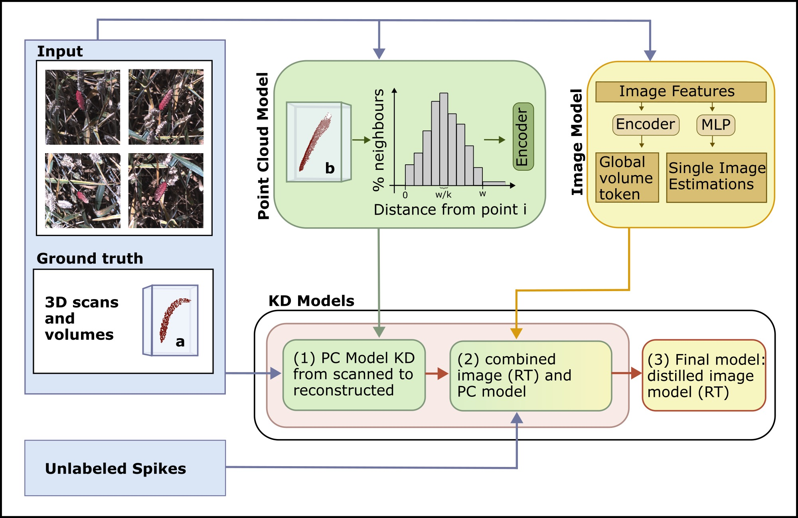
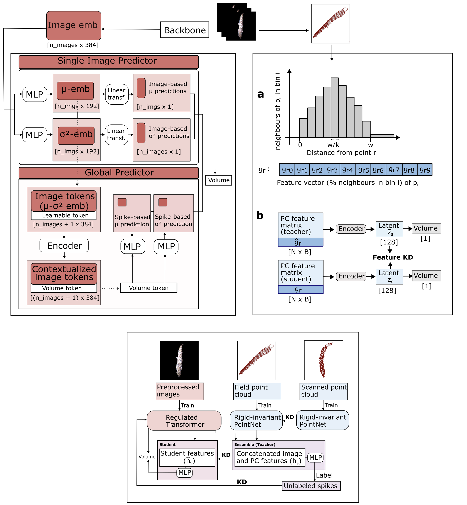

Accurate estimation of wheat spike volume is important for yield component analysis and stress resilience assessment, yet field-based measurement remains challenging. Active 3D sensing methods such as Light Detection and Ranging (LiDAR) or time-of-flight (ToF) are sensitive to plant motion or poorly suited to outdoor conditions, while 3D reconstructions are computationally expensive. Direct 2D image processing would offer computational advantages, but image-based models lack explicit geometric information. We therefore propose a hybrid 2D-3D approach with knowledge distillation during training while enabling efficient image-only inference. First, we train a rigid-invariant point cloud network using distance-based histogram features to obtain pose-robust geometric representations. We then combine the 3D model with a proposed multi-view image-based regulated Transformer (RT) in an ensemble architecture. Finally, we distill the ensemble knowledge into a purely image-based student model using either feature-based or label-based distillation. The two distilled RTs reduce the mean absolute error (MAE) from 654.31 mm3 of the non-distilled RT to 639.93 mm3 and 644.62 mm3, and increase correlation from 0.76 to 0.77 and 0.82, respectively. At the same time, inference time is reduced from 160 ms to 1.4 ms per spike. Distillation further mitigates volume-dependent bias and reshapes the latent representation of the image model toward a geometry-aware shape. Our results demonstrate that 3D-informed training of a 2D Transformer allows for scalable and efficient spike volume estimation for high-throughput field phenotyping.


Regulated Transformer: Fast, but less accurate for volume estimation. Single image predictor to estimate per-image volume, reducing overestimation (regulation). Global predictor to learn volume token from 12 views per spike. Rigid-invariant point cloud model: Higher accuracy but long inference time. Use KD to align features from indoor and outdoor point clouds to improve field point cloud models. Use KD to transfer 3D information to image models.